Using the afex R package for ANOVA (factorial and repeated measures)
R from SPSS (yay!). It has gone fairly well. However, once we get into ANOVA-type methods, particularly the repeated measures flavor of ANOVA, R isn’t as seamless as almost every…
We recently switched our graduate statistics courses to R from SPSS (yay!). It has gone fairly well. However, once we get into ANOVA-type methods, particularly the repeated measures flavor of ANOVA, R isn’t as seamless as almost every other statistical approach. As such, my colleague Sarah Schwartz found the afex package that looks like it can be helpful in simplifying the code and increasing the amount of useful information obtained.
This post is for walking through the use of afex, includig aov_car(), aov_ez(), and aov_4(). To show them off, I’ll use the following ficticious data set:
set.seed(42)
z <- data.frame(a1 = c(rnorm(100,2), rnorm(100,1),rnorm(100,0)),
b = rep(c("A", "B", "C"), each = 100),
c = factor(rbinom(300, 1, .5)),
ID = 1:300,
a2 = c(rnorm(100,2), rnorm(100,1),rnorm(100,0)),
a3 = c(rnorm(100,2), rnorm(100,1),rnorm(100,0)))and we will load:
library(lsmeans)
library(afex)
library(tidyverse)One-Way ANOVA
afex::aov_car()
The main function in afex is aov_car(). Both of the functions described in the later sections are just wrappers of this one but allow different syntax. To use aov_car(), we are essentially using aov with a few adjustments.
aov1 <- z %>%
aov_car(a1 ~ b + Error(ID),
data = .)
aov1## Anova Table (Type 3 tests)
##
## Response: a1
## Effect df MSE F ges p.value
## 1 b 2, 297 0.98 106.93 *** .42 <.0001
## ---
## Signif. codes: 0 '***' 0.001 '**' 0.01 '*' 0.05 '+' 0.1 ' ' 1Notably, we use the Error(ID) even in one-way ANOVA. This complication can actually simplify things, as changing to a repeated-measures or mixed effects model is not difficult. Essentially all it is doing is telling the function the grouping variable.
We can check assumptions fairly quickly with the plot() function and pulling out the aov object from aov1.
aov1$aov %>%
plot()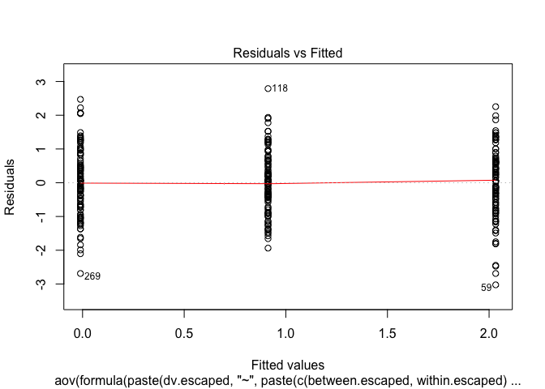
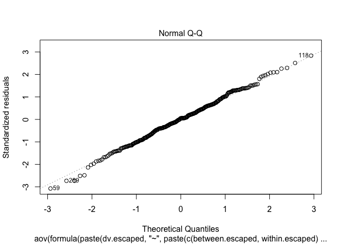
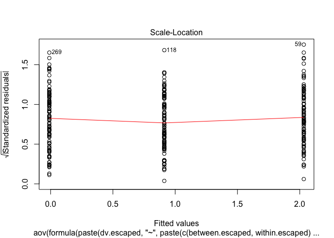
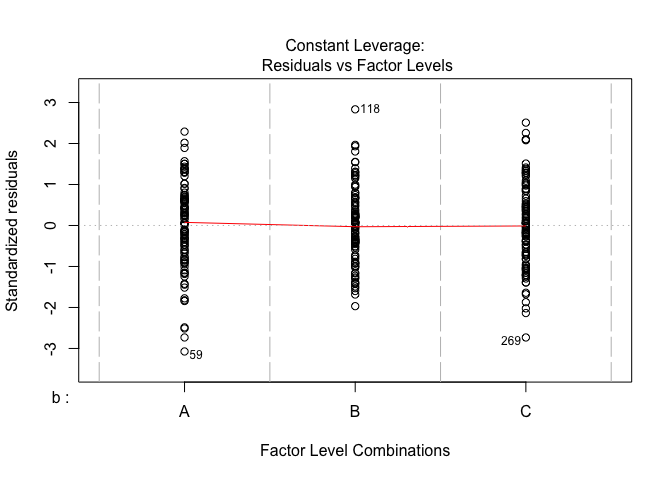
From here, we can obtain the least squares means and plot them with ggplot2 showing the mean and the confidence interval. It is important to not pull the lsmeans() function from the lsmeans package because it actually is functionality that afex provides. As such, using lsmeans::lsmeans() will through an error.
aov1 %>%
lsmeans(specs = "b") %>%
data.frame %>%
ggplot(aes(b, lsmean)) +
geom_point() +
geom_errorbar(aes(ymin = lower.CL, ymax = upper.CL))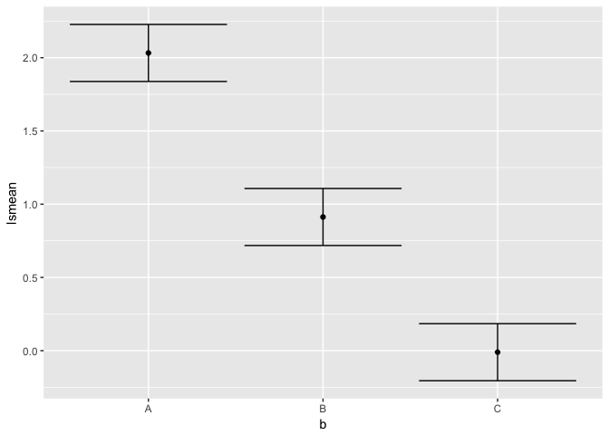
We can also look at some PostHoc type analyses using the lsmeans() object.
aov1 %>%
lsmeans(specs = "b") %>%
pairs() %>%
update(by=NULL, adjust = "tukey")## contrast estimate SE df t.ratio p.value
## A - B 1.1199985 0.1399111 297 8.005 <.0001
## A - C 2.0428830 0.1399111 297 14.601 <.0001
## B - C 0.9228845 0.1399111 297 6.596 <.0001
##
## P value adjustment: tukey method for comparing a family of 3 estimatesWe can also use “holm”, “bonf”, and “scheffe” in place of “tukey”. In this case, it doesn’t matter much because they have very small p-values.
afex::aov_ez()
This function is notable in its explicit syntax; however, my preferences are for aov_4() for most situations because it uses the syntax of lme4::lmer().
z %>%
aov_ez(id = "ID",
dv = "a1",
between = "b",
data = .)## Contrasts set to contr.sum for the following variables: b
## Anova Table (Type 3 tests)
##
## Response: a1
## Effect df MSE F ges p.value
## 1 b 2, 297 0.98 106.93 *** .42 <.0001
## ---
## Signif. codes: 0 '***' 0.001 '**' 0.01 '*' 0.05 '+' 0.1 ' ' 1The same checks and tests as shown before are possible here.
afex::aov_4()
z %>%
aov_4(a1 ~ b + (1|ID),
data = .)## Contrasts set to contr.sum for the following variables: b
## Anova Table (Type 3 tests)
##
## Response: a1
## Effect df MSE F ges p.value
## 1 b 2, 297 0.98 106.93 *** .42 <.0001
## ---
## Signif. codes: 0 '***' 0.001 '**' 0.01 '*' 0.05 '+' 0.1 ' ' 1Again, the same checks and tests can be done with this one as well.
Factorial ANOVA
Two or more factors can be included as well. These are very similar to their One-Way ANOVA counterparts.
aov2 <- z %>%
aov_car(a1 ~ b * c + Error(ID),
data = .)
aov2.1 <- z %>%
select(a1, b, c, ID) %>%
aov_ez(id = "ID",
dv = "a1",
between = c("b", "c"),
data = .)
aov2 <- z %>%
aov_4(a1 ~ b * c + (1|ID),
data = .)
aov2## Anova Table (Type 3 tests)
##
## Response: a1
## Effect df MSE F ges p.value
## 1 b 2, 294 0.98 107.11 *** .42 <.0001
## 2 c 1, 294 0.98 2.07 .007 .15
## 3 b:c 2, 294 0.98 0.32 .002 .73
## ---
## Signif. codes: 0 '***' 0.001 '**' 0.01 '*' 0.05 '+' 0.1 ' ' 1You can remove the interaction in the following ways:
aov2.1 <- z %>%
aov_car(a1 ~ b + c + Error(ID),
data = .)
## Not sure how to remove it from `aov_ez()`
aov2.1 <- z %>%
aov_4(a1 ~ b + c + (1|ID),
data = .)
aov2.1## Anova Table (Type 3 tests)
##
## Response: a1
## Effect df MSE F ges p.value
## 1 b 2, 296 0.98 107.65 *** .42 <.0001
## 2 c 1, 296 0.98 2.08 .007 .15
## ---
## Signif. codes: 0 '***' 0.001 '**' 0.01 '*' 0.05 '+' 0.1 ' ' 1We can check some assumptions using the plot() function.
aov2$aov %>%
plot()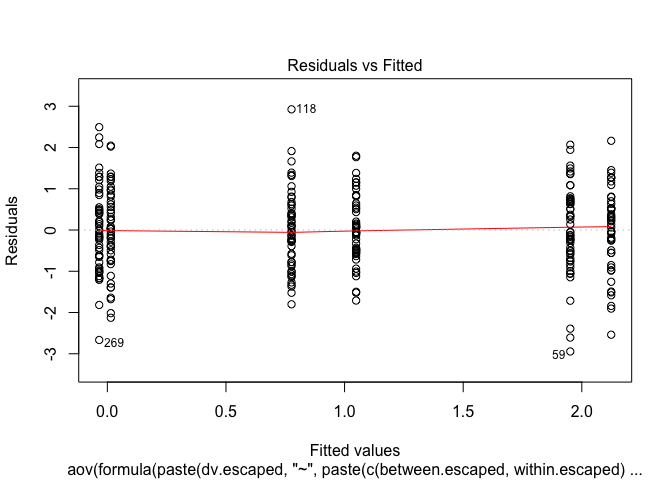
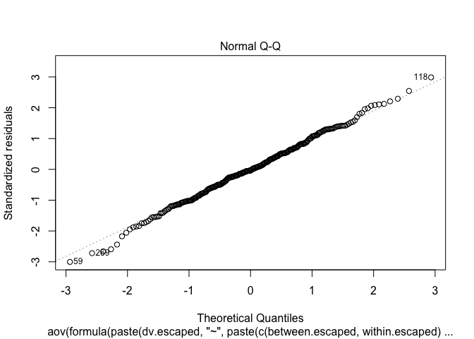
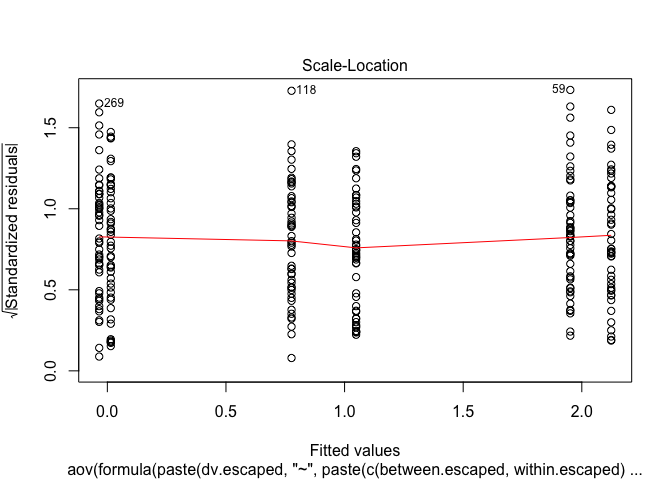
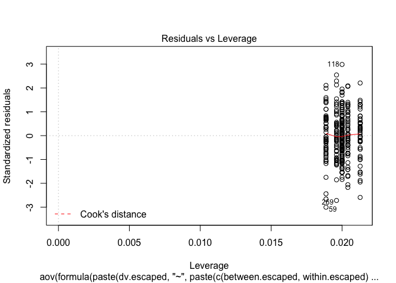
From here, we can obtain the least squares means and plot them with ggplot2 showing the mean and the confidence interval by our other factor.
aov2 %>%
lsmeans(specs = c("b", "c")) %>%
data.frame %>%
ggplot(aes(b, lsmean, group = c, color = c)) +
geom_point(position = position_dodge(width = .3)) +
geom_errorbar(aes(ymin = lower.CL, ymax = upper.CL),
position = position_dodge(width = .3),
width = .2)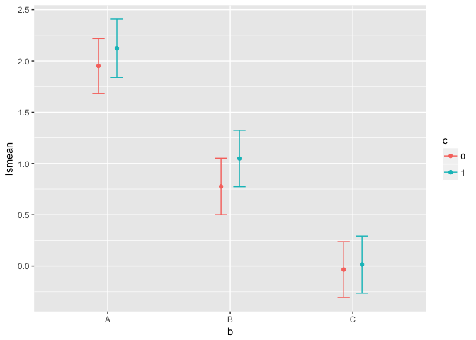
Repeated Measures ANOVA
Repeated measures is now much like the other types of ANOVA. The major difference is that we need to change the format of the data.
z_long <- z %>%
tidyr::gather("meas", "value", a1, a2, a3)## # A tibble: 900 x 5
## b c ID meas value
## <fctr> <fctr> <int> <chr> <dbl>
## 1 A 0 1 a1 3.370958
## 2 A 0 2 a1 1.435302
## 3 A 1 3 a1 2.363128
## 4 A 0 4 a1 2.632863
## 5 A 1 5 a1 2.404268
## 6 A 0 6 a1 1.893875
## 7 A 1 7 a1 3.511522
## 8 A 0 8 a1 1.905341
## 9 A 0 9 a1 4.018424
## 10 A 1 10 a1 1.937286
## # ... with 890 more rows
aov_rm <- z_long %>%
aov_car(value ~ 1 + Error(ID/meas),
data = .)
aov_rm## Anova Table (Type 3 tests)
##
## Response: value
## Effect df MSE F ges p.value
## 1 meas 1.97, 589.96 1.05 0.26 .0004 .76
## ---
## Signif. codes: 0 '***' 0.001 '**' 0.01 '*' 0.05 '+' 0.1 ' ' 1
##
## Sphericity correction method: GGThis, however, is when the aov_4() is easier for me to understand overall. It uses code that makes more sense to me so I’ll show it here (I won’t be showing how to use aov_ez() for repeated measures).
aov_rm <- z_long %>%
aov_4(value ~ 1 + (meas|ID),
data = .)
aov_rm## Anova Table (Type 3 tests)
##
## Response: value
## Effect df MSE F ges p.value
## 1 meas 1.97, 589.96 1.05 0.26 .0004 .76
## ---
## Signif. codes: 0 '***' 0.001 '**' 0.01 '*' 0.05 '+' 0.1 ' ' 1
##
## Sphericity correction method: GGChecking assumptions with the repeated measures ANOVA is notably harder, in general and in R. Here, we are waiting for some development to happen so we can do the following (note the use of lm instead of aov).
aov_rm$lm %>%
plot()Error: 'plot.mlm' is not implemented yetWe can obtain the least squares means and plot them with ggplot2 showing the mean and the confidence interval.
aov_rm %>%
lsmeans(specs = "meas") %>%
data.frame %>%
ggplot(aes(meas, lsmean)) +
geom_point() +
geom_errorbar(aes(ymin = lower.CL, ymax = upper.CL))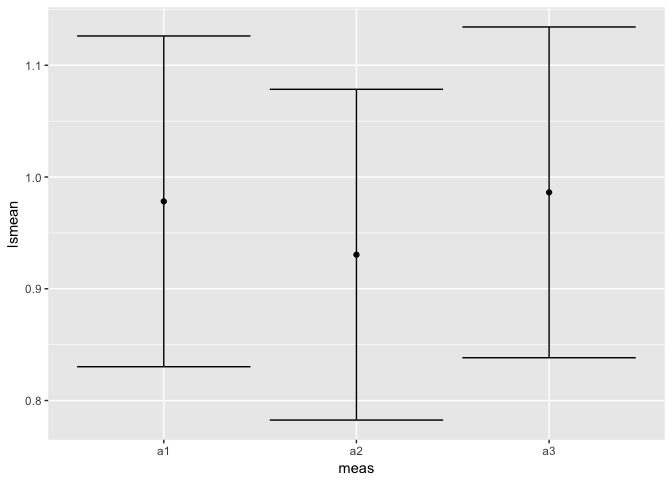
Mixed Models
Similarly to the repeated measures ANOVA, I’m going to focus on aov_4().
mixed_mod <- z_long %>%
aov_4(value ~ b + c + (meas|ID),
data = .)
mixed_mod## Anova Table (Type 3 tests)
##
## Response: value
## Effect df MSE F ges p.value
## 1 b 2, 296 1.06 280.88 *** .39 <.0001
## 2 c 1, 296 1.06 2.02 .002 .16
## 3 meas 1.98, 584.88 1.04 0.27 .0006 .76
## 4 b:meas 3.95, 584.88 1.04 1.55 .007 .19
## 5 c:meas 1.98, 584.88 1.04 0.27 .0006 .76
## ---
## Signif. codes: 0 '***' 0.001 '**' 0.01 '*' 0.05 '+' 0.1 ' ' 1
##
## Sphericity correction method: GGWe have the same issue of checking assumptions here as the repeated measures ANOVA
mixed_mod$lm %>%
plot() Error: 'plot.mlm' is not implemented yetFinally, we can check out the least-squares means across groups and time.
mixed_mod %>%
lsmeans(specs = c("meas", "b", "c")) %>%
data.frame %>%
ggplot(aes(meas, lsmean, group = b, color = b)) +
geom_point() +
geom_line() +
geom_errorbar(aes(ymin = lower.CL, ymax = upper.CL),
width = .2) +
facet_grid(~c)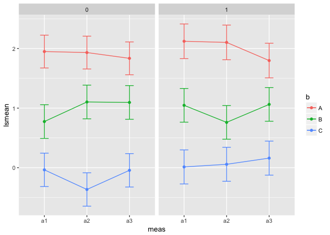
There you have it! I believe afex is a valuable contribution to R, particularly in dealing with factorial and repeated-measures ANOVA.